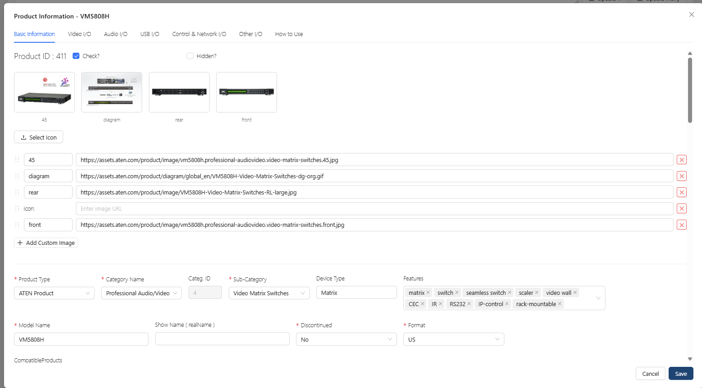
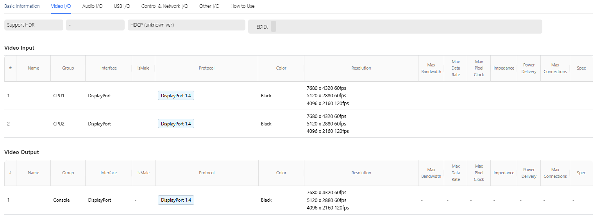
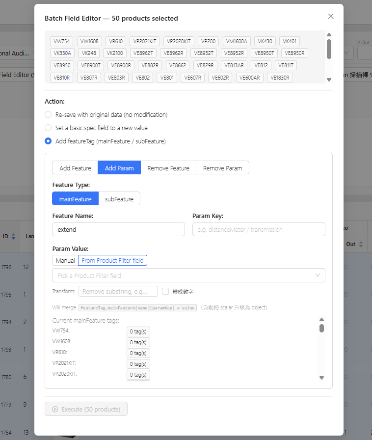

2025 - 2026
這是 Solution Builder 資料層的核心工程：把數千個 SKU、橫跨多個世代的遺留規格文件，
用 GPT-4o + Prompt 規則 + 三道品質防線結構化為統一的
productDatabase.json——驅動前端的埠口渲染、相容性檢測與產品搜尋。
傳統上這是後端團隊的 Data Wrangling 難題；LLM 把它翻轉成
Prompt Engineering 問題，讓 UX 小隊能獨立完成資料工程。
初版是一次性的批次腳本，後來升格為 Agent 式的互動工具——
確定性優先、LLM 補洞、機制驗證、人在迴圈。
Schema 設計、Prompt Engineering、Node.js Pipeline、品質防線設計
Schema 從前端消費性倒推，因為設計它的人同時在寫消費它的前端
資料工程 · LLM Pipeline · Prompt Engineering

本系列共三篇：本篇是第二篇，聚焦資料層的 LLM 結構化 Pipeline。 產品本身見〈Solution Builder〉； 消費這份資料的 AI 產品顧問見〈AI Agent：約束 LLM 的不確定性〉。
產品規格存在於兩類遺留系統：不同世代資訊架構各異的產品頁 HTML， 以及掃描版、Word 轉存、手工編排混雜的規格書 PDF。 同樣是「兩個 HDMI 輸入埠」，實際資料長這樣：
產品 A：「2 x HDMI Type A Female」 產品 B：「HDMI Input x 2」 產品 C：「HDMI (female) ×2，支援 4K@60Hz HDR」 產品 D：「HDMI 輸入埠：2 個（Type A，母座，含 HDCP 2.2）」
要把數千 SKU × 數十個欄位 × 多世代的資料結構化，傳統做法需要專門的
Data Engineer 團隊、為每個世代手工維護解析規則表，再逐筆人工檢查——
這個量級的工程資源，遠超出 UX 團隊可調動的範圍。
關鍵機會：LLM 能「讀懂」人類寫的規格描述並依指示輸出結構化 JSON。
這把問題從「寫得出 Parser 嗎」變成「規則定義得夠精確嗎」——後者是設計師擅長的事。
Schema 設計的每個決定都對應一個前端需求：
{
"modelName": "VM5404H",
"deviceType": "Matrix",
"features": ["seamless switch", "scaler", "EDID", "video-wall"],
"video": {
"input": [
{
"ioName": "HDMI In 1",
"interface": "HDMI",
"connector": "Type A Female",
"maxBandwidth": "18",
"resolution": [{ "pixel": [3840, 2160], "fps": "60" }],
"hdcp": "2.2"
}
],
"output": [ ... ]
},
"audio": { ... }, "network": { ... }, "usb": { ... }, "control": { ... }
}
畫布上的 Handle 可以直接依方向渲染，不需要前端再判斷。
相容性檢測只需做字串比對；性別與顏色等描述拆到 connector 欄位。
頻寬不足的警示需要做大小比較，「18Gbps」這種字串做不到。
這份 Schema 同時被三處消費：Diagram Engine 的 Handle 動態生成、 屬性面板的 I/O 分組顯示、以及 Wizard 模板的自動配對。 一份 Schema、三處消費——這是它穩定的原因，也是它必須先被設計好的原因。

這條 Pipeline 的概念三階段始終不變；改變的是它的形態—— 初版以批次腳本實作，後來重構為常駐的互動工具（見工具升格）。
Prompt 的核心不是「請幫我整理規格」，而是一組精確的轉換規則。 每條規則都來自一個「不這樣做，前端功能就會壞」的具體原因。
「2 x HDMI」直覺的輸出是 { "interface": "HDMI", "count": 2 }——
但前端需要的是兩個獨立的 port 物件，因為每個埠都是獨立的
Handle：獨立 ID、獨立位置、獨立連線狀態。規則明定「展開為 N 個物件並自動編號，
絕不輸出 count 欄位」。
interface 欄位只允許枚舉值（HDMI / DisplayPort / DVI / SDI / USB-C…）， 性別拆到 connector、HDCP 與 EDID 等協議拆到對應欄位—— 各世代的自由文字在這一步收斂成可比對的結構。
延伸器成對出現：型號後綴 -T（Transmitter）的 Unit-to-Unit 埠是 video.output，後綴 -R（Receiver）則是 video.input。 這條領域知識若沒寫進 Prompt，LLM 會把兩端都標成 input—— Handle 方向全錯、相容性檢測直接失效。
規格書常把共通規格寫在前言（「本產品所有 HDMI 埠支援 18Gbps、HDR」）， 規則要求識別這類敘述並把屬性複製到每一個相關 port 物件， 而不是只掛在第一個。
Prompt 內含 3–5 個高品質的完整輸入輸出範例，分別覆蓋基準案（單純 Matrix）、 方向判定（Extender T/R）、多介面清洗（KVM）、共享屬性密集的產品。 實測中，範例對輸出品質的影響大於同等篇幅的規則文字—— 而且人工抽檢抓到的錯誤案例，會直接回收成新範例，形成迭代循環。
ajv 對每筆輸出做 JSON Schema 校驗——必填欄位缺失、枚舉值不合法、 數值格式錯誤，一律退回重跑。
領域邏輯的斷言式檢查：Extender -T 必須有 video.output、 乘數必須已展開等。Schema 對了但語意錯的案例在這裡被攔下。
隨機抽 5% 由 UX 與產品企劃比對原始規格書。 錯誤回收為新 Few-Shot 範例，Prompt 以版本化管理迭代。
經過三輪 Prompt 迭代，各類錯誤率的變化：
規則一明確化 + 對應 Few-Shot 範例。
枚舉值白名單 + 欄位拆分規則。
領域知識寫成規則三後降幅最大——這正是「規則要由懂前端消費的人來寫」的證據。
錯誤率為內部抽檢實測，僅供量級參考。
成本：結構化主流程用 GPT-4o，簡單清洗用 GPT-4o-mini；
批次處理避免單次上下文過長；規則版本號 + 輸入雜湊做快取，避免重跑。
可重現性：Prompt 以 git 版本化，每筆產品記錄由哪個版本生成；
失敗案例保留原始輸入與 LLM 回應，供後續迭代分析。
初版 Pipeline 是跑一次的 Node.js 腳本。但產品線持續更新、Prompt 規則持續迭代， 「跑一次」的形態撐不住日常營運，因此重構為常駐的互動工具： Express 服務 + React 工作檯（ProductTool），把「抽取 → 結構化 → 驗證 → 入庫」 變成可天天操作、可批次執行的流程。
Prompt 不再是一大段文字，而是可組合的 Skill： type skill（KVM / ProAV）決定 Schema 與系統角色，modifier skill（如 VE 延伸器）疊加規則， PromptBuilder 把它們組合成「抽取 → 轉換 → 驗證」三階段的 System Prompt（含 Few-Shot 與常見錯誤清單）。 skillRegistry 是唯一事實來源——新增一種產品類型 = 新增一個 Skill class、註冊表加一筆， 工作檯的類型下拉與 Skill 勾選自動跟上，不改 UI code。
specTableParser 把規格表 HTML 解析成乾淨結構——GPT 收到的是乾淨文字，不是原始 HTML，從源頭減少幻覺空間。
官網既有的 Product Filter 參數直接寫入；產品 Features 文字比對 catalog 別名 （單詞邊界比對、泛用詞排除清單、長別名優先），每個 tag 都帶來源標記。 GPT 只負責補缺口，最後再過 validate 驗證。
解析器、tag 比對、埠數計算皆可獨立測試、可重現——與〈AI Agent〉篇「確定性邏輯一律純函式」是同一條原則。
featureTag 的比對來源，就是〈AI Agent〉的 Feature Catalog—— 資料層在結構化產品的同時，直接生產 Agent 標籤搜尋所需的產品語彙。 一份 catalog、兩端消費：工具端用它產 tag，Agent 端用它理解需求。
Pipeline 串進 Product Manager 後台之後，新品上架流程變成： 產品企劃貼入規格文字 → 觸發單產品結構化 → Schema 校驗通過自動上架、 失敗則通知企劃補齊。產品資料維護不再排隊等工程資源—— 這是資料層對商業流程最直接的改變。

Schema 從前端倒推——因為設計 Schema 的人同時在寫消費它的
Handle 渲染邏輯，知道埠口需要獨立物件而不是 count。
Prompt 規則從 UX 倒推——因為知道乘數不展開、方向不判定，
相容性檢測這個核心體驗就不成立。
用 LLM 取代 Regex——接受「90% 自動 + 三道防線」勝過
「追求 100% 規則覆蓋」：Regex 方案要為每個世代維護解析規則，
錯誤率與維護成本都遠高於 Prompt 迭代。
這套做法適用於任何「遺留資料結構化」場景：
資料是給程式用的，不是給人看的——先確定誰消費、怎麼消費。
迭代三輪以上；每輪用抽檢結果驅動，而非憑感覺改 Prompt。
LLM 的輸出永遠過機制再進資料庫，幻覺靠驗證擋、不靠叮嚀擋。
這個 Pipeline 是整個 Solution Builder 的地基：沒有它， 動態 Handle、相容性檢測、AI 產品搜尋都不成立。 它展示的能力不是「會寫 Prompt」，而是把領域知識、前端消費需求與品質機制 設計成一條可迭代的資料生產線——用 AI 解決一個原本屬於後端團隊的工程問題。